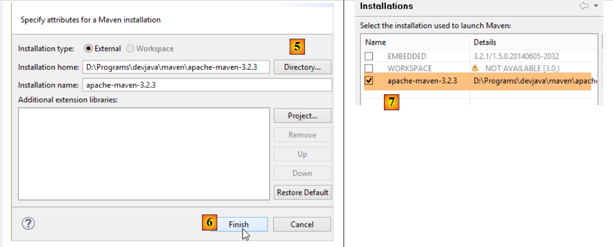
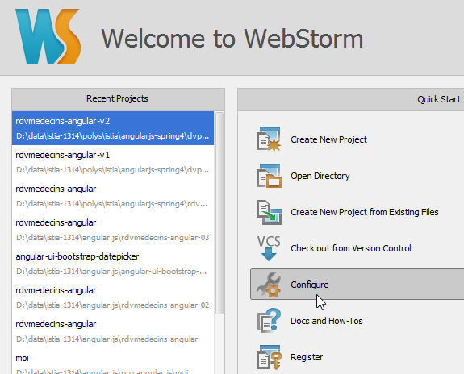

9. Anhänge
Hier erklären wir, wie Sie die in diesem Dokument verwendeten Tools auf Windows 7- oder 8-Rechnern installieren.
9.1. Installation eines JDK
Das neueste JDK finden Sie unter der URL [http://www.oracle.com/technetwork/java/javase/downloads/index.html] (Stand: Oktober 2014). Im Folgenden bezeichnen wir den JDK-Installationsordner als <jdk-install>.
 |
9.2. Installation von Maven
Maven ist ein Tool zur Verwaltung von Abhängigkeiten in einem Java-Projekt und mehr. Es ist unter [http://maven.apache.org/download.cgi] verfügbar.
 |
Laden Sie das Archiv herunter und entpacken Sie es. Wir bezeichnen den Maven-Installationsordner als <maven-install>.
 |
- In [1] wird Maven über die Datei [conf/settings.xml] konfiguriert;
Sie enthält die folgenden Zeilen:
<!-- localRepository
| The path to the local repository maven will use to store artifacts.
|
| Default: ${user.home}/.m2/repository
<localRepository>/path/to/local/repo</localRepository>
-->
Der Standardwert in Zeile 4 kann, falls Ihr {user.home}-Pfad wie bei mir ein Leerzeichen enthält (zum Beispiel [C:\Users\Serge Tahé]), bei bestimmten Programmen, darunter IntelliJ IDEA, zu Problemen führen. Sie sollten dann etwa Folgendes eingeben:
<!-- localRepository
| The path to the local repository maven will use to store artifacts.
|
| Default: ${user.home}/.m2/repository
<localRepository>/path/to/local/repo</localRepository>
-->
<localRepository>D:\Programs\devjava\maven\.m2\repository</localRepository>
und vermeiden Sie in Zeile 7 die Verwendung eines Pfads, der Leerzeichen enthält.
9.3. Installation von STS (Spring Tool Suite)
Wir installieren die SpringSource Tool Suite [http://www.springsource.com/developer/sts], eine Eclipse-Umgebung, die mit zahlreichen Plugins zum Spring-Framework vorkonfiguriert ist und über eine vorinstallierte Maven-Konfiguration verfügt.
 |
- Gehen Sie auf die Website der SpringSource Tool Suite (STS) [1], um die aktuelle Version von STS [2A] [2B] herunterzuladen.
 |
 |
- Die heruntergeladene Datei ist ein Installationsprogramm, das die Dateiverzeichnisstruktur [3A] [3B] erstellt. In [4] starten wir die ausführbare Datei,
- in [5] das IDE-Arbeitsbereichsfenster nach dem Schließen des Begrüßungsfensters. In [6] wird das Anwendungsserver-Fenster angezeigt,
 |
- in [7] das Serverfenster. Ein Server ist registriert. Es handelt sich um einen Tomcat-kompatiblen VMware-Server.
Sie müssen STS das Maven-Installationsverzeichnis angeben:
 |
- Konfigurieren Sie STS in [1-2];
- in [3-4] fügen Sie eine neue Maven-Installation hinzu;
 |
- Geben Sie unter [5] das Installationsverzeichnis für Maven an;
- Schließen Sie in [6] den Assistenten ab;
- in [7] die neue Maven-Installation als Standard festlegen;
 |
- Überprüfen Sie in [8-9] das lokale Maven-Repository – den Ordner, in dem die heruntergeladenen Abhängigkeiten gespeichert werden und in dem STS die erstellten Artefakte ablegt;
9.4. Installation eines Tomcat-Servers
Tomcat-Server sind unter der URL [http://tomcat.apache.org/download-80.cgi] verfügbar. Die Beispiele in diesem Dokument wurden mit Version 8.0.9 getestet, die unter der URL [http://archive.apache.org/dist/tomcat/tomcat-8/v8.0.9/bin/] verfügbar ist.
 |
Laden Sie [1] die für Ihren Rechner geeignete ZIP-Datei herunter. Nach dem Entpacken sehen Sie die Verzeichnisstruktur [2]. Anschließend können Sie diesen Server zu den STS-Servern hinzufügen:
 |
- Fügen Sie in [1-3] einen neuen Server in STS hinzu; (um das Fenster „Server“ zu öffnen, wählen Sie „Fenster“ / „Ansicht anzeigen“ / „Sonstiges“ / „Server“ / „Server“);
 |
- Wählen Sie in [5] einen Tomcat 8-Server aus;
- Geben Sie diesem Server in [6] einen Namen;
- Geben Sie in [8] das Installationsverzeichnis für den zuvor heruntergeladenen Tomcat an;
- In [9] den neuen Server;
 |
- In [11-12] starten Sie den Tomcat-8-Server;
- in [13-14] das Protokollfenster;
- in [15], um ihn zu beenden;
9.5. Installation von [WampServer]
[WampServer] ist , eine Software-Suite für die Entwicklung mit PHP, MySQL und Apache auf einem Windows-Rechner. Wir werden sie ausschließlich für das Datenbankmanagementsystem MySQL verwenden.
 |
- Wählen Sie auf der [WampServer]-Website [1] die passende Version [2] aus.
- Die heruntergeladene ausführbare Datei ist ein Installationsprogramm. Während der Installation werden verschiedene Informationen abgefragt. Diese betreffen MySQL nicht, sodass Sie sie ignorieren können. Am Ende der Installation erscheint das Fenster [3]. Starten Sie [WampServer],
 |
- in [4] erscheint das [WampServer]-Symbol in der Taskleiste unten rechts auf dem Bildschirm [4],
- wenn Sie darauf klicken, erscheint das [5]-Menü. Damit können Sie den Apache-Server und das MySQL-DBMS verwalten. Um Letzteres zu verwalten, verwenden Sie die Option [PhpMyAdmin],
- wodurch das unten abgebildete Fenster geöffnet wird,

Wir werden hier nur wenige Details zur Verwendung von [PhpMyAdmin] bereitstellen. Das Dokument enthält die erforderlichen Informationen, wenn diese benötigt werden.
9.6. Installation des Chrome-Plugins [Advanced Rest Client]
In diesem Dokument verwenden wir den Chrome-Browser von Google (http://www.google.fr/intl/fr/chrome/browser/). Wir werden die Erweiterung [Advanced Rest Client] hinzufügen. So geht’s:
- Rufen Sie den [Google Web Store] (https://chrome.google.com/webstore) über den Chrome-Browser auf;
- suchen Sie nach der App [Advanced Rest Client]:
 |
- Die App steht dann zum Download bereit:
 |
- Um sie zu erhalten, müssen Sie ein Google-Konto erstellen. Der [Google Web Store] fordert Sie dann zur Bestätigung auf [1]:
 |
- In [2] ist die hinzugefügte Erweiterung unter der Option [Anwendungen] [3] verfügbar. Diese Option erscheint auf jedem neuen Tab, den du im Browser erstellst (STRG-T).
9.7. Verwaltung von JSON in Java
Für den Entwickler transparent nutzt das [Spring MVC]-Framework die [Jackson]-JSON-Bibliothek. Um zu veranschaulichen, was JSON (JavaScript Object Notation) ist, stellen wir hier ein Programm vor, das Objekte in JSON serialisiert und den umgekehrten Vorgang durchführt, indem es die generierten JSON-Strings deserialisiert, um die ursprünglichen Objekte wiederherzustellen.
Mit der „Jackson“-Bibliothek können Sie Folgendes erstellen:
- die JSON-Zeichenkette eines Objekts: new ObjectMapper().writeValueAsString(object);
- ein Objekt aus einer JSON-Zeichenkette: new ObjectMapper().readValue(jsonString, Object.class).
Beide Methoden können eine IOException auslösen. Hier ist ein Beispiel.
 |
Das oben genannte Projekt ist ein Maven-Projekt mit der folgenden [pom.xml]-Datei;
<?xml version="1.0" encoding="UTF-8"?>
<project xmlns="http://maven.apache.org/POM/4.0.0"
xmlns:xsi="http://www.w3.org/2001/XMLSchema-instance"
xsi:schemaLocation="http://maven.apache.org/POM/4.0.0 http://maven.apache.org/xsd/maven-4.0.0.xsd">
<modelVersion>4.0.0</modelVersion>
<groupId>istia.st.pam</groupId>
<artifactId>json</artifactId>
<version>1.0-SNAPSHOT</version>
<dependencies>
<dependency>
<groupId>com.fasterxml.jackson.core</groupId>
<artifactId>jackson-databind</artifactId>
<version>2.3.3</version>
</dependency>
</dependencies>
</project>
- Zeilen 12–16: die Abhängigkeit, die die Bibliothek „Jackson“ einbindet;
Die Klasse [Person] sieht wie folgt aus:
package istia.st.json;
public class Personne {
// data
private String nom;
private String prenom;
private int age;
// manufacturers
public Personne() {
}
public Personne(String nom, String prénom, int âge) {
this.nom = nom;
this.prenom = prénom;
this.age = âge;
}
// signature
public String toString() {
return String.format("Personne[%s, %s, %d]", nom, prenom, age);
}
// getters and setters
...
}
Die Klasse [Main] sieht wie folgt aus:
package istia.st.json;
import com.fasterxml.jackson.databind.ObjectMapper;
import java.io.IOException;
import java.util.HashMap;
import java.util.Map;
public class Main {
// the serialization / deserialization tool
static ObjectMapper mapper = new ObjectMapper();
public static void main(String[] args) throws IOException {
// creation of a person
Personne paul = new Personne("Denis", "Paul", 40);
// display jSON
String json = mapper.writeValueAsString(paul);
System.out.println("Json=" + json);
// person instantiation from Json
Personne p = mapper.readValue(json, Personne.class);
// person display
System.out.println("Personne=" + p);
// a picture
Personne virginie = new Personne("Radot", "Virginie", 20);
Personne[] personnes = new Personne[]{paul, virginie};
// json display
json = mapper.writeValueAsString(personnes);
System.out.println("Json personnes=" + json);
// dictionary
Map<String, Personne> hpersonnes = new HashMap<String, Personne>();
hpersonnes.put("1", paul);
hpersonnes.put("2", virginie);
// json display
json = mapper.writeValueAsString(hpersonnes);
System.out.println("Json hpersonnes=" + json);
}
}
Die Ausführung dieser Klasse erzeugt folgende Bildschirmausgabe:
Wichtige Erkenntnisse aus dem Beispiel:
- das für JSON/Objekt-Transformationen erforderliche [ObjectMapper]-Objekt: Zeile 11;
- die [Person] --> JSON-Transformation: Zeile 17;
- die JSON --> [Person]-Transformation: Zeile 20;
- die von beiden Methoden ausgelöste [IOException]: Zeile 13.
9.8. Installation von [WebStorm]
[WebStorm] (WS) ist die IDE von JetBrains zur Entwicklung von HTML/CSS/JS-Anwendungen. Ich fand sie perfekt für die Entwicklung von Angular-Anwendungen. Die Download-Seite ist [http://www.jetbrains.com/webstorm/download/]. Es handelt sich um eine kostenpflichtige IDE, aber eine 30-Tage-Testversion steht zum Download bereit. Es gibt erschwingliche Versionen für Privatpersonen und Studenten.
Um JS-Bibliotheken in einer Anwendung zu installieren, verwendet WS ein Tool namens [Bower]. Dieses Tool ist ein Modul von [Node.js], einer Sammlung von JS-Bibliotheken. Zusätzlich werden JS-Bibliotheken aus einem Git-Repository abgerufen, was einen Git-Client auf dem Rechner erfordert, der den Download durchführt.
9.8.1. Installation von [node.js]
Die Download-Seite für [node.js] lautet [http://nodejs.org/]. Laden Sie das Installationsprogramm herunter und führen Sie es aus. Das ist vorerst alles, was Sie tun müssen.
9.8.2. Installation des [Bower]-Tools
Das [bower]-Tool, mit dem Sie JavaScript-Bibliotheken herunterladen können, lässt sich auf verschiedene Arten installieren. Wir werden es über die Befehlszeile installieren:
C:\Users\Serge Tahé>npm install -g bower
C:\Users\Serge Tahé\AppData\Roaming\npm\bower -> C:\Users\Serge Tahé\AppData\Roaming\npm\node_modules\bower\bin\bower
bower@1.3.7 C:\Users\Serge Tahé\AppData\Roaming\npm\node_modules\bower
├── stringify-object@0.2.1
├── is-root@0.1.0
├── junk@0.3.0
...
├── insight@0.3.1 (object-assign@0.1.2, async@0.2.10, lodash.debounce@2.4.1, req
uest@2.27.0, configstore@0.2.3, inquirer@0.4.1)
├── mout@0.9.1
└── inquirer@0.5.1 (readline2@0.1.0, mute-stream@0.0.4, through@2.3.4, async@0.8
.0, lodash@2.4.1, cli-color@0.3.2)
- Zeile 1: Der [node.js]-Befehl, der das [bower]-Modul installiert. Damit der Befehl funktioniert, muss sich die ausführbare Datei [npm] im PATH des Rechners befinden (siehe Abschnitt unten);
9.8.3. Installation von [Git]
Git ist ein System zur Versionskontrolle von Software. Unter der URL [http://msysgit.github.io/] ist eine Windows-Version namens [msysgit] verfügbar. Wir werden [msysgit] nicht zur Verwaltung der Versionen unserer Anwendung verwenden, sondern lediglich zum Herunterladen von JS-Bibliotheken, die auf Websites wie [https://github.com] zu finden sind und ein spezielles Zugriffsprotokoll erfordern, das vom [msysgit]-Client bereitgestellt wird
Der Installationsassistent umfasst mehrere Schritte, darunter die folgenden:
 |  |
Bei den übrigen Installationsschritten können Sie die vorgegebenen Standardwerte übernehmen.
Sobald Git installiert ist, überprüfen Sie, ob sich die ausführbare Datei im PATH Ihres Computers befindet: [Systemsteuerung / System und Sicherheit / System / Erweiterte Systemeinstellungen]:
 |  |
Die PATH-Variable sieht wie folgt aus:
D:\Programs\devjava\java\jdk1.7.0\bin;D:\Programs\ActivePerl\Perl64\site\bin;D:\Programs\ActivePerl\Perl64\bin;D:\Programs\sgbd\OracleXE\app\oracle\product\11.2.0\client;D:\Programs\sgbd\OracleXE\app\oracle\product\11.2.0\client\bin;D:\Programs\sgbd\OracleXE\app\oracle\product\11.2.0\server\bin;...;D:\Programs\javascript\node.js\;D:\Programs\utilitaires\Git\cmd
Stellen Sie sicher, dass:
- der Pfad zum Installationsordner von [node.js] vorhanden ist (hier D:\Programme\javascript\node.js);
- der Pfad zur ausführbaren Datei des Git-Clients vorhanden ist (hier D:\Programme\Utilities\Git\cmd);
9.8.4. Konfigurieren von [WebStorm]
Überprüfen wir nun die [WebStorm]-Konfiguration
 |  |
 |
Wählen Sie oben die Option [1] aus. Die Liste der bereits installierten [node.js]-Module wird unter [2] angezeigt. Diese Liste sollte nur die Zeile [3] für das [bower]-Modul enthalten, wenn Sie den vorherigen Installationsvorgang befolgt haben.
9.9. Installation eines Android-Emulators
Die im Android SDK enthaltenen Emulatoren sind langsam, was von ihrer Verwendung abhält. Das Unternehmen [Genymotion] bietet einen wesentlich leistungsfähigeren Emulator an. Er ist unter der URL [https://cloud.genymotion.com/page/launchpad/download/]
(Februar 2014).
Sie müssen sich registrieren, um eine Version für den privaten Gebrauch zu erhalten. Laden Sie das [Genymotion]-Produkt mit der virtuellen Maschine VirtualBox herunter;

Installieren Sie [Genymotion] und starten Sie es anschließend. Laden Sie als Nächstes ein Image für ein Tablet oder Smartphone herunter:
 |
- Fügen Sie unter [1] ein virtuelles Gerät hinzu;
- Wählen Sie unter [2] ein oder mehrere Geräte zur Installation aus. Sie können die angezeigte Liste verfeinern, indem Sie die gewünschte Android-Version [3] und das Gerätemodell [4] angeben;
 |
- Sobald der Download abgeschlossen ist, sehen Sie unter [5] die Liste der virtuellen Geräte, die zum Testen Ihrer Android-Apps zur Verfügung stehen;